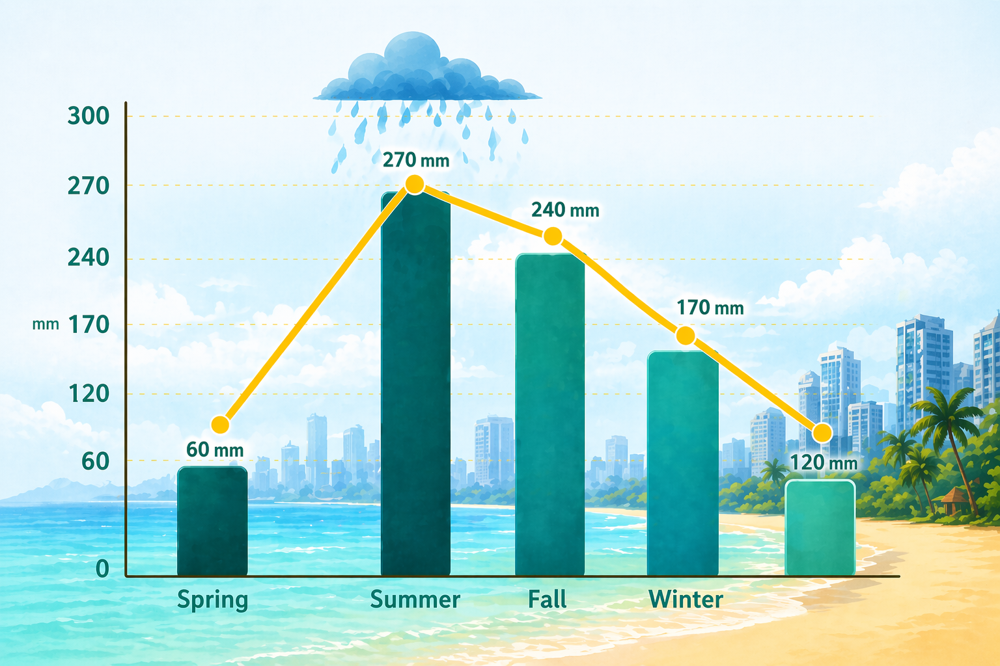

Thailand's City That Never Sleeps
Pattaya Pulse:
Food, Sun and Neon Nights
From bustling promenades to nearby island, the city offers an energetic and diveres escape. Discover Pattaya City with vibrant nightlife and rich cultural landmarks.

Tamara Wallker
Pattaya is a vibrant coastal city that offers a rich mix of experiences for
every kind of traveler.
From its sunny beaches and tropical islands to lush green viewpoints, nature lovers will find plenty to
explore. The city is also famous for its energetic nightlife, with lively streets, bars, and entertainment
venues that come alive after sunset.
Beyond that, Pattaya has a cultural side, featuring beautiful
temples, local markets, and traditional Thai performances. Visitors can enjoy water sports during the day
and world-class dining in the evening. Whether you’re seeking relaxation, adventure, or entertainment,
Pattaya delivers it all in one place.
Rain periods in Pattaya
